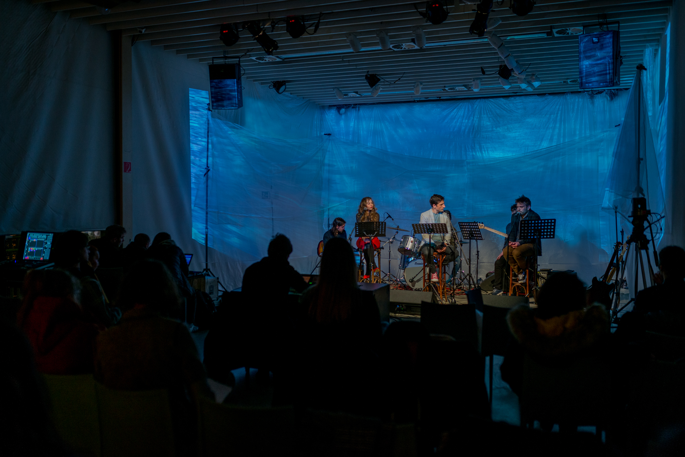
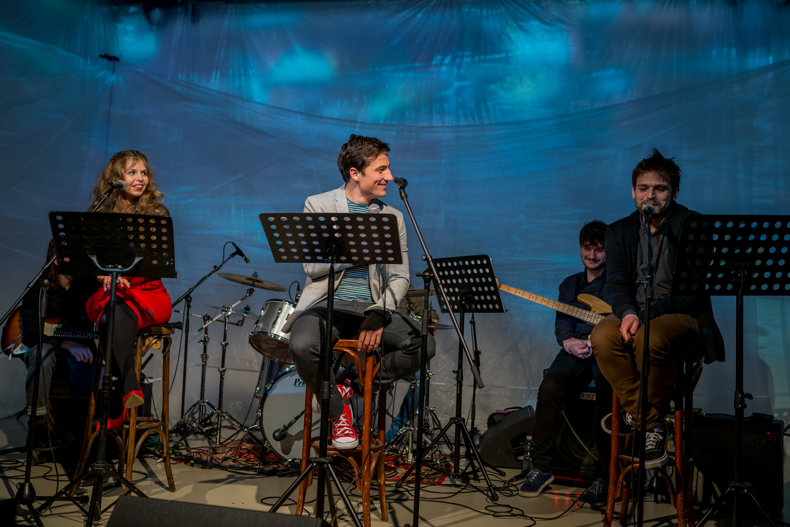
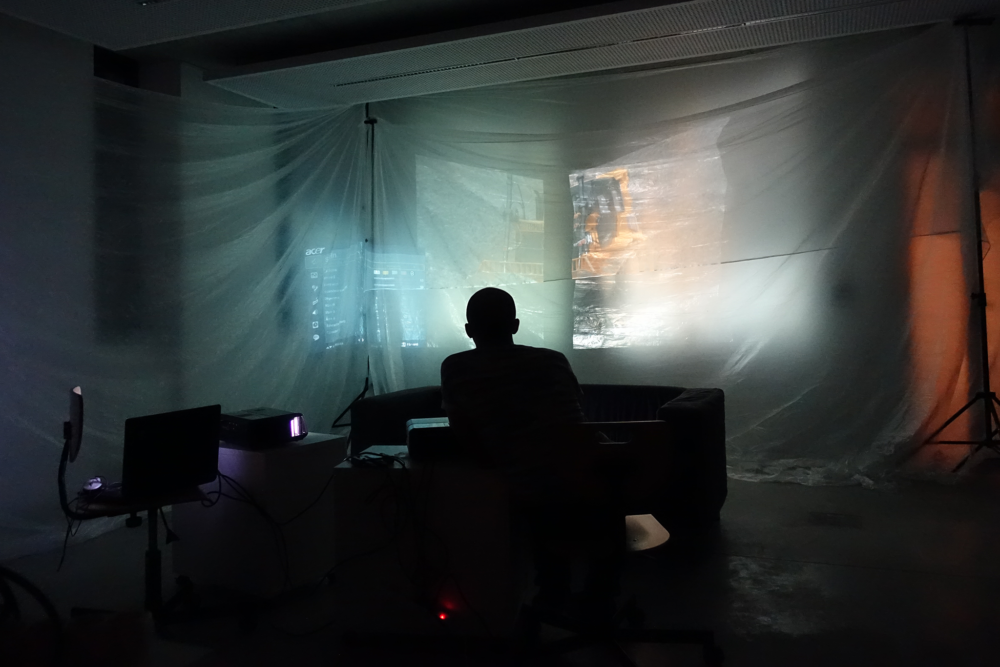
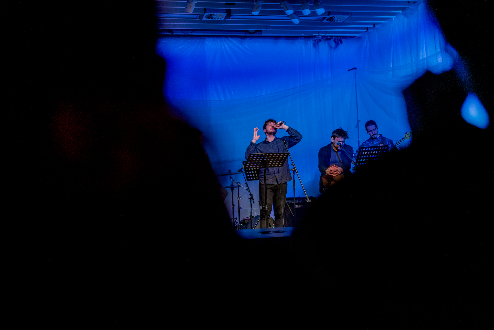
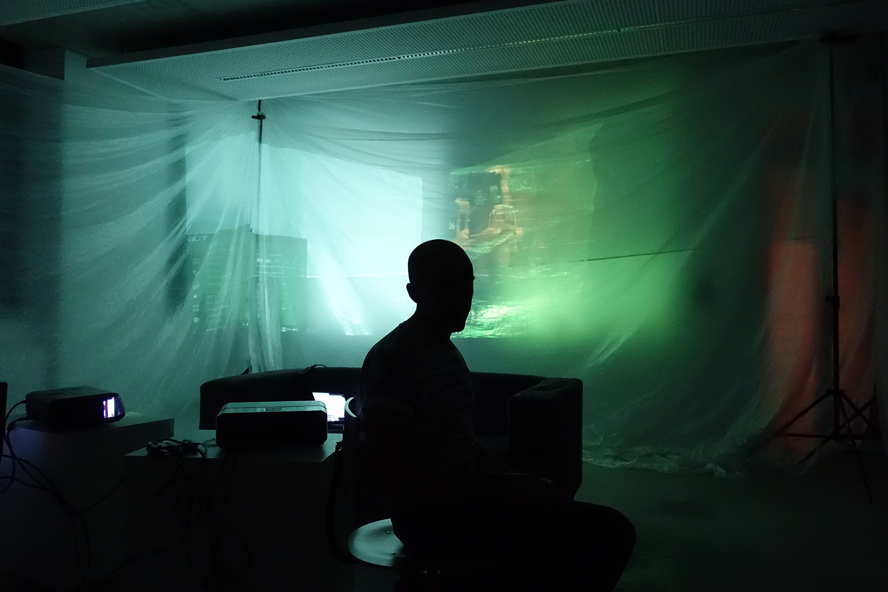

Koncepciónk fő motívuma a rétegződés. Különböző átlátszó takaró-fóliákra vetítünk urbánus illetve absztrakt formákat. A vékony fóliák rétegződése, gyűrődése és esetleges mozgása folyamatosan torzítja, sokszorosítja, átértelmezi a vetített tartalmat. A zenei rész vizualitása hasonló, de amíg a szöveges részeknél a lassabb változás jellemző, addig ott a ritmus és a struktúra sokkal intenzívebb változásokat mutat. A fóliák installálása kicsit emlékeztet az építkezéseken alkalmazott takarásokra, “épület-becsomagolásra”.